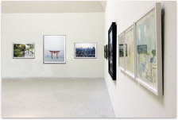
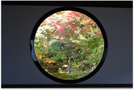

展覧会について
展覧会の趣旨
 日本の景色写真展は、日本の景色が持っている魅力や素晴らしさを写した作品を展示しています。
テーマを「日本の景色」に設定し、プロ・アマを問わず広く作品を募集したところ、
「日本の景色」が詰まった作品約200点が集まりました。
これらはどれも力作で、都会のにぎわいや田舎の落ち着き、
美しい自然などまさしく日本の魅力が凝縮された作品と言えるでしょう。
また、会期中は作品を出展しているプロの写真家によるギャラリートークをはじめ、 多くのイベントを開催いたします。ぜひ、足をお運びください。
日本✕写真
 日常生活ではあまり意識しない景色の中から、 美しい四季や日本特有の感覚である侘び寂びが感じられる瞬間を、 様々な角度から写し出しています。
作品を通してお気に入りの風景を見つけたり、日本の景色の美しさを感じてください。 また、普段の生活で自分だけの日本の風景を発見し、写真に収める喜びに つながれば幸いです。